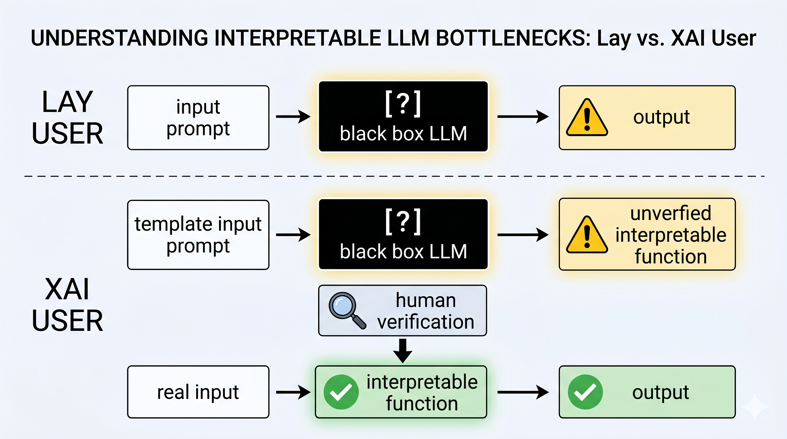

Position: Dumb ways to (X)AI

Dumb ways to use AI even with X
One of the ways that AI can be used in daily life is just to ask it. Easy. But there'll be always doubts about the reliability of the answer. One example of this is that you have an excel sheet with a lot of data and you need to make a routine plot with a boring piece of code. What most of people do is to ask the AI directly to generate the plots directly for them the AI model will look at the data and generate the plot for them. The problem with this is that you don't know how the AI model generated the plot, and you don't know if it's correct or not. Another problem is that you cannot properly control the plot, at the level of granularity that you want. What you can do is to just hammer the prompt AKA "prompt engineer" to get the plot that you want, and this sucks.
Less dumb ways to use AI
An alternative way to use AI is to use it as a middleman. You can ask the AI to generate a code that generates the plot for you, and then you can look at the code and see if it's correct or not. This fixes two problems: you can see how the AI generated the plot (reliability), and you can control the plot at the level of granularity that you want (controlability).
This makes me believe that if we want to use AI with X (ie in a more reliable and controllable way), we need to use it as a middleman, and not end-to-end. This requires more work, but it's worth it. This is a well-known idea in the XAI community, and it's called "interpretable bottleneck". I'm not sure how much people actually use this in their daily prompting.
Problems with less dumb ways to use AI
This is interesting but it has its own problems. The interpretable bottleneck is doable with the task at hand can be handled with a simple piece of code. But what if the task is more complex and requires a large codebase? In that case, we cannot just prompt the AI to generate a codebase everyday for every task for us. Not that AI cannot do it, but it's just not practical from the human side since we cannot read codebases for each task. Let's call this problem the "limited human-scalability of interpretable bottlenecks", or LHSIB for abbreviation lovers. But as you can see it's not a very catchy name, so I won't use it.
The second problem is that sometimes the task is not even properly defined to be handled with a large codebase. For example, if you want to use AI to detect eyes in a picture. You can ask the AI to generate a code that detects eyes in a picture, that would be a code that trains another "Eye Detector" network. For this researchers have created "concept bottlenecks", which I think is a very interesting idea but it requires finer grain annotations and sounds like cheating to me. I'll say why in the next section. but let's call this problem the "limited task-formalizability of interpretable bottlenecks", or LTFIB for abbreviation lovers. And by now you know I despise this abbreviation.
The third problem is that sometimes (maybe most of the times) the task cannot be handled with the user of AI. For example, you want to use Gen AI to generate a code that extracts some statistics from a sheet. You want to be fancy and do XAI not just naked AI, so you generate the code but you don't know coding so you cannot verify the code, and you just run it and hope for the best. Now I'd like to highlight the fact that most of people cannot write code, most of people cannot draw a cat, most of people cannot change a tire (even with youtube), etc. This should not be confused with the first problem, where the task can be handled with a codebase, although both are related to scalability. It's just not practical to read one codebase for every task even if we have enough money to train/hire enough verifiers. I'd call this problem the "limited verifier availability of interpretable bottlenecks", or LUVIB. Now I put this sentence here just for symmetry, if you know what I mean.
Concept Bottleneck is Cheating but Perhaps Nobody Cares
The problem with "Black Box" AI is that we do not know "how it works" ie the inner working of the model is not interpretable to us. It might be the case (and usually is) that the input and output both are interpretable. So in concept bottleneck, we just replace "Cat" label with finer grain labels like "has whiskers", "has tail", etc. This is just another finer-grained black box regression. If the model's inner workings cannot be trusted for detecting cat, it cannot be trusted for detecting "has whiskers" either. So it is not that suddenly we have fixed the interpretability problem.
There's some hype around "concept bottlenecks" but I don't see a bright future. Don't get me wrong, I think it's better to have a finer-grained black box regression than a coarse-grained one, but the hype around "concept bottlenecks" is not proportional to "fine-grained black box regression". But as I mentioned in the title, perhaps nobody cares about this.
What I see in the future
Limited Human-Scalability of Interpretable Bottlenecks. So What?
It makes me think of the following scenarios: 1. (likely) There'll still be a lot of human jobs that require monitoring large codebases (perhaps partially or completely) generated by AI. If managers decide for larger layoffs, there'll be a shitstorm of unverified code, and this means 2. (Hollywood likely) AI-induced Apocalyptic shitstorm, and we all die.
Limited Task-Formalizability of Interpretable Bottenecks. So What?
This makes me think that we have a long way to go in XAI. Let's assume there's a third scenario in previous section that I've not seen, ie, a lot of people with jobs made of easily formalizable tasks become jobless. Bussiness as usual (at least for those who have a job) and we don't die. In that case, since we have a long way to go in XAI, I expect that people who work in XAI will still have a job (Phew!). I expect the hype around "concept bottlenecks" to die down and we'll go back to the good old "interpretable bottlenecks" for formalizable tasks and perhaps attribution for not-yet-formalizable tasks like detecting eyes in a picture (go as fine grained as you want here).
Remark I did my phd mostly on attribution methods, so I think it is (perhaps unconsciously) in my favor to foresee that it remains no matter how much it sucks. The analysis might be biased in this regard.
Limited Verifier Availability of Interpretable Bottlenecks. So What?
Obviously, this means there'll be the need to share-rent verifiers accross different users (being companies or individuals). Say, there'll be a company named BOOBLE or AMADON that provides "interpretable bottleneck verification as a service" (IBVaaS). Mark the time when I said this, because, god forbid, I might be right and you might want to invest in BOOBLE, AMADON, or alike that are of the same scale.
This also means that we need to have standardized interpretable bottlenecks for different tasks, so BOOBLE comes up with "IBS" (Interpretable Bottleneck Standard) for different tasks. They process your data according to IBS, and model of your choice. You might also want to use expert verifiers for some tasks, so you sign up for "IBVaaS Premium" and you get your bottleneck outputs verified by a human.
Final Thoughts
I think the idea of using AI as a middleman is a good one, and it's something that we should all consider when using AI in our daily lives. It might not be the best solution, but it's the best solution that we have right now, and it's better than just asking AI to do everything for us without any control or reliability.